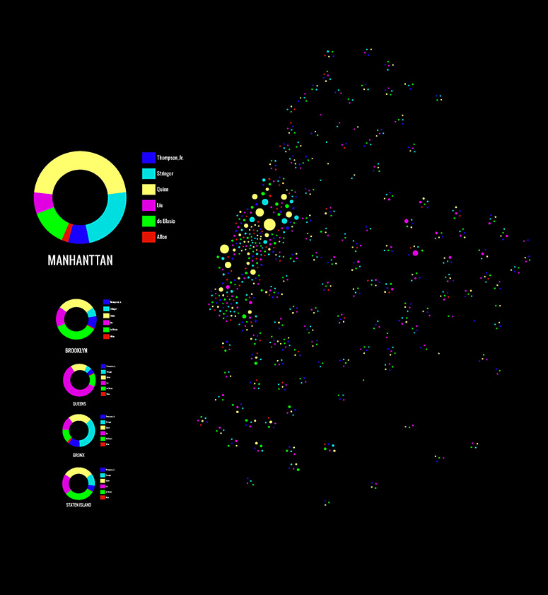
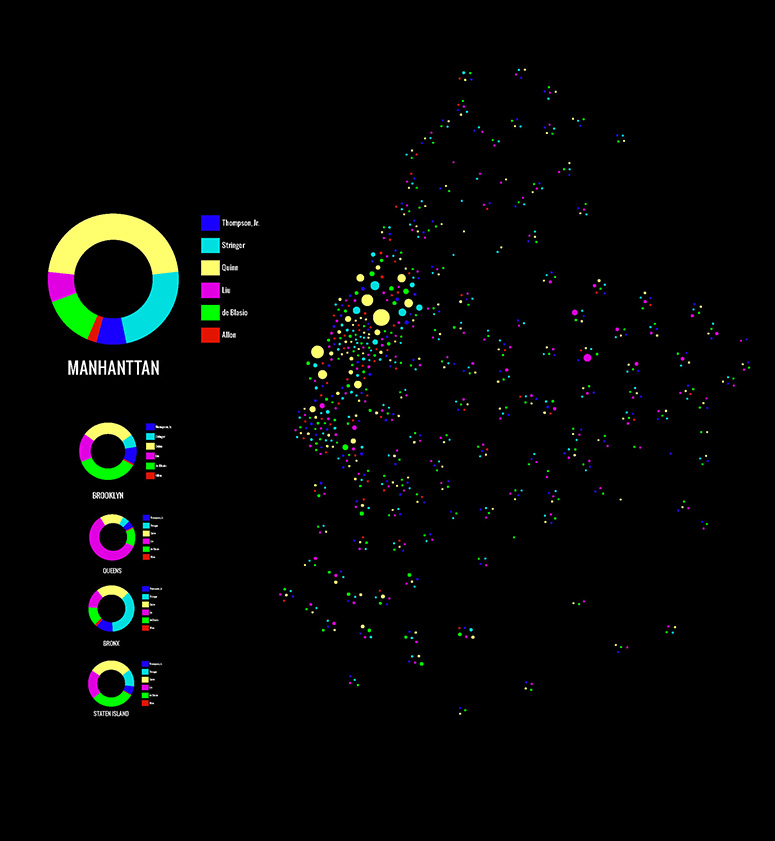
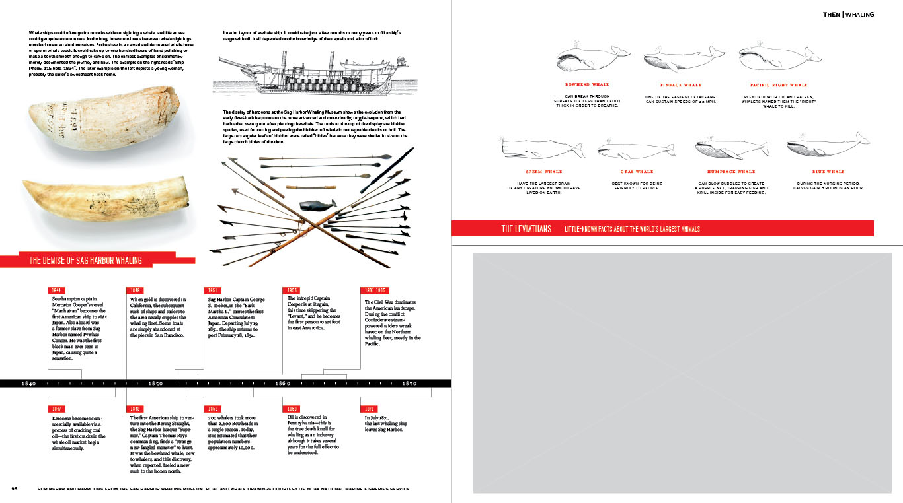
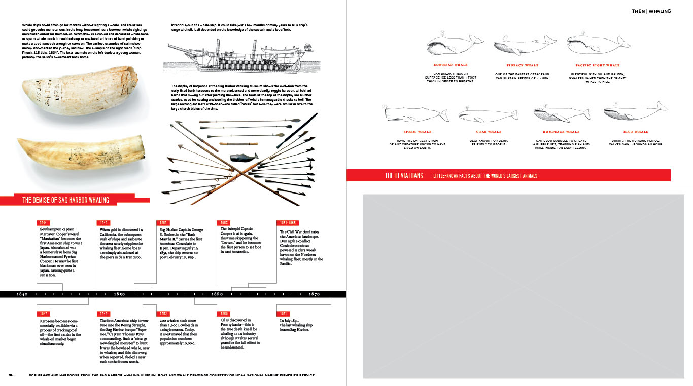

Hello, name is Zack.
This is my story.

YOU CAN NAVIGATE USING THE ARROW KEYS.
HIT ESCAPE FOR A BIRDS EYE VIEW.
Introduction
I am a psychology degree holding, graphic designing, professional online poker playing, data designer.
Creating successful designs requires insights from diverse fields. My hands on experience allow me to bridge these once isolated fields.
The Tools
Currently, I enjoy using d3, Processing, R, Gephi, and some of Google's visualization tools in combination with Adobe Ps, Ai, Br, and Id.
[ A SCREENSHOT OF MY TOOLBAR ]
Financial Case Study Design


Map Design

 

Nine weeks of data
Profit or Loss per week
Number of Games played per week
Interactive area chart of profits
BUILT WITH D3js
CUMULATIVE BAR CHART OF PROFITS PER WEEK
Using data differently...
My interests surround mapping relationships based on a mathematical interpretation of recorded behavior.
MAPPING FACULTY DYNAMICS OF THE EPIDEMIOLOGY DEPARTMENT AT COLUMBIA UNIVERSITY.
{ Created with R, Gephi, and JavaScript }
now we can run complex algorithms realtime in the browser
Custom data visualizations
Upon discovering Processing, I also discovered that Jer Throp lives only 10 blocks away. I took all three of his workshops. At the end we created this visualization of the air traffic at Denver Airport over a 24hr period.
Telling stories through design

[ TWO YEARS AS A GRAPHIC DESIGNER IN THE HAMPTONS AND NYC ]

 



Social Network Visualizations


With over 3,000,000 hands of poker played, I've been able to interact and study data a way no one really has before.
TO CONTINUE ON, PLEASE HIT YOUR RIGHT ARROW KEY.
FOR MORE INFORMATION ABOUT MY POKER CAREER, HIT YOUR DOWN ARROW KEY.
Using an equity analysis algorithm developed at M.I.T. and robust datamining techniques, I was able to create a mathematically profitable strategy.
Moreover, poker enabled me to think of data and how to use it in ways I couldn't before.

A year and a half after my very first game I was ranked fifth most profitable player for high stakes 9-Man Single Table SuperTurbo Tournments, in the world.
Since you can play poker from anywhere with an internet connection.
I enjoyed the liberty to take pictures and travel the world.

[ THALIAND, 2010 ]
I lived on this farm in the fall. It was across the street from where Jackson Pollock used to paint.
[ EAST HAMPTON, NY. FALL 2010 ]
Laos is like Thaliand, but 50 years ago.

[ Mung Nui, Laos. MAY 2010 ]

My brother going with the flow at Yellowstone National park.

[ WYOMING. SEPT 2010 ]


West Oz is great for surfing and seeing kangaroos.
[ MARGARET RIVER, AUSTRALIA. MAY 2009 ]